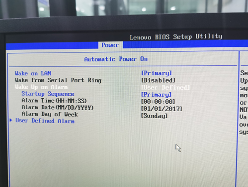

Farmerbot: Guide for All Networks
Table of Contents
- Introduction
- Farmerbot: Video Guide
- How to Prepare Your Farm for the Farmerbot with WOL
- How to Move Your Farm to a Different Network
- How to Set the Farmerbot
- Farmerbot FAQ
- Feedback and Questions
Introduction
Welcome to the Farmerbot. The Farmerbot is a service that a farmer can run in order to automatically manage the nodes in his or her farm.
The key feature of the Farmerbot is powermanagement. The Farmerbot will automatically shutdown nodes from its farm whenever possible and bring them back on using Wake-on-Lan (WOL) when they are needed. It will try to maximize downtime as much as possible by recommending which nodes to use, this is one of the requests that the farmerbot can handle. All this behavior is customizable through markup definition files.
There are 3 main steps to run the Farmerbot on your 3Node Threefold farm.
- Prepare Your Farm for the Farmerbot with WOL
- Move Your Farm to either Main Net, Test Net, QA Net or Dev Net (optional)
- Set the Farmerbot
The farmerbot is currently available for Dev Net, QA Net, Test Net and Main Net.
Note that the Dev Net and the QA Net are testing environments and farmers do not receive farming rewards (TFT) when deploying on those networks. To farm TFT, you need to have your farm on the Test Net or the Main Net.
Farmerbot: Video Guide
The following video made by Scott from the Threefold team explains how to set up the Farmerbot for your Threefold farm.
If you have questions concerning the video, feel free to ask in the Threefold forum. Reading the present guide and the Farmerbot FAQ might also answer your questions.
How to Prepare Your Farm for the Farmerbot with WOL
ZOS can utilize 2 NIC's (Network Interface Card) of a node (server, workstation, desktop, ..). The first NIC on the motherboard will always be what we call the ZOS/dmz NIC, the second one is used for public config's (Gateway, public IP's for workloads, ..). So if you don't have public IP's in your farm, only the first NIC of your ZOS node will be used. This subnet is where the farmerbot operates. If you do have public IP's the same applies.
Wake On LAN (WOL) is used to be able to boot (start) a ZOS node remotely that was shut down by the farmerbot. It works by sending what is called a 'magic packet' to the NIC MAC address of a ZOS node. If that NIC is setup correctly, aka 'listening' for the packet, the node will start up, post and boot ZOS. The farmerbot will keep a list of MAC addresses for nodes under it's management, so it knows where to send the packet if it's required.
WOL Requirements
WOL comes with a few requirements. We list them in the sections that follow.
Enabling WOL in the BIOS
Enable WOL in the BIOS of your ZOS node.
A ZOS node must be capable of doing WOL. Have a look at your node hardware / BIOS manual. If so make sure to enable it in the BIOS! A bit of research will quickly tell you how to enable for your hardware. Some older motherboards do not support this, sometimes you can be lucky it does after a BIOS upgrade, but that is brand/model specific.
Some examples:


ZOS Nodes and NIC
All your ZOS nodes and their first NIC (ZOS/dmz) should be in the same network subnet (also called network segment or broadcast domain).
This requires some basic network knowledge. WOL packets can not be send across different subnets by default, it can but this requires specific configuration on the firewall that connects the two subnets. Though cross-subnet WOL is currently not supported by the farmerbot.
A 'magic' WOL packet is sent only on networking layer 2 (L2 or the 'data link layer') based on MAC address. So not on L3 based on ip address. This is why all nodes that should be brought up via WOL, need to be in the same subnet.
You can check if this is the case like this: if for example one node has the ip 192.168.0.20/24, then all other nodes should have an ip between 192.168.0.1 and 192.168.0.254. You can calculate subnet ranges easely here: https://www.tunnelsup.com/subnet-calculator/
So for the 192.168.0.0/24 example, you can see the range under 'Usable Host Range':

NIC Firmware and WOL
Some NIC's require WOL to be set on the NIC firmware.
This is fully handled by ZOS. Every time ZOS boots it will enable WOL on links if they require it. So if a ZOS node then is added to a farmerbot, it will have WOL enabled on its NIC when it's turned off (by the farmerbot).
Your farmerbot can be run on any system, including on a node. It doesn't have to be on the same network subnet as the nodes from the farm. The nodes of the farm on the other hand have to be in the same LAN. Don't hesitate to ask your technical questions here, we and the community will help you set things up!
How to Move Your Farm to a Different Network
Note that the farmerbot is currently available for Dev Net, QA Net, Test Net and Main Net. Thus, it might not be necessary to move your farm to a different network.
To move your farm to a different network, you need to create a new bootstrap image for the new network instead of your current network. You should also wipe your 3Nodes' disks before moving to a different network.
To download the Zero-OS bootstrap image, go to the usual bootstrap link https://v3.bootstrap.grid.tf/ and select the network you want.

Once you have your new bootstrap image for the new network, wipe your disks, insert the new bootstrap image and reboot the 3Node.
How to Set the Farmerbot
The sections on this page will guide you through the requirements, the required configuration and the steps to run the farmerbot.
Requirements
The Farmerbot is shipped inside a docker image so that it is easy to run in a docker environment. Thus, the one and only requirement to run the farmerbot is docker so please install docker on your VM or your system. Next, you'll have to copy the docker-compose file that will start the farmerbot for you when executing the command specified in section Running the farmerbot.
Note that you can read this SSH guide to learn how to deploy a Full VM on the ThreeFold Grid with Linux, Mac or Linux with IPv4 or the Planetary Network. Also note that the farmerbot doesn't need an IPv4 connection. It is thus cheaper to use the Planetary Network.
With the minimum Ubuntu Full VM requirements, it currently costs 0.25TFT/hour to run with the Planetary Network (Date: 24-03-23). This should suffice to run the Farmerbot. This is around 180 TFT/month. Of course, check for yourselves if the costs are correct.
Note: The account that you are using to deploy the farmerbot needs to have some TFT available. Every time the farmerbot has to wakeup a node or shutdown a node it will have to call the chain and thus execute a transaction. The account executing those transactions will be billed (transaction fees).
Configuration
Some configuration is required before running the farmerbot which should happen in a markdown file (farmerbot.md for example). This file should be located inside a folder called config in the directory of the docker-compose file. The possible configuration will be discussed in this section.
Node Configuration
The farmerbot can only manage the nodes that you define in the configuration. So, for each node in your farm, fill in these required attributes:
- id: the id of the node
- twinid: the twin id of the node
Next to the required attributes you can provide the following attributes:
- never_shutdown: a value telling the farmerbot whether or not the node should never be shutdown
- cpuoverprovision: a value between 1 and 4 defining how much the cpu can be overprovisioned (2 means the farmerbot will allocate 2 deployments to one cpu)
- public_config: a value telling the farmerbot whether or not the node has a public config
- dedicated: a value telling the farmerbot whether or not the node is dedicated (only allow renting the full node)
- certified: a value telling the farmerbot whether or not the node is certified
The snippet below shows you an example of a node definition in the markdown config file:
!!farmerbot.nodemanager.define
id:20
twinid:105
public_config:true
dedicated:1
certified:yes
cpuoverprovision:1
Farm Configuration
Two more settings are required regarding the farm:
- id: the id of the farm
- public_ips: the amount of public ips that the farm has
Here is an example of the farm definition in the markdown config file:
!!farmerbot.farmmanager.define
id:3
public_ips:2
Power Configuration
Finally, you can add some configuration that will the behavior of the farmerbot regarding the powermanagement of the nodes. The following attributes can be added to the markdown config file:
- wake_up_threshold: a value between 50 and 80 defining the threshold at which nodes will be powered on or off. If the usage percentage (total used resources devided by the total amount of resources) is greater then this threshold a new node will be powered on. In the other case the farmerbot will try to power off nodes if possible.
- periodic_wakeup: nodes have to be woken up once a day, this variable defines the time at which this should happen.
- periodic_wakeup_limit: by default, during a periodic wakeup, the offline nodes will sequentially (1 at a time) be powered on with an interval of 5 minutes. The periodic_wakeup_limit variable allows you to specify how much nodes you want to wakeup at the same time during a periodic wakeup. Some examples:
- Value 1: wakeup the 1 offline node, wait 5 minutes, wakeup 1 offline node, wait 5 minutes, etc.
- Value 2: wakeup the 2 offline nodes, wait 5 minutes, wakeup 2 offline nodes, wait 5 minutes, etc.
An example of the power definition in the markdown config file:
!!farmerbot.powermanager.configure
wake_up_threshold:75
periodic_wakeup:8:30AM
periodic_wakeup_limit:1
Example of a Configuration File
Below you will find an example of a markdown config file for a farm with 3 nodes and 2 public ips. The first node has a public config, is dedicated, is certified and has a cpu overprovisioning of 2. The wake up threshold is set to 75% and the periodic wakeup will happen at 8:30AM.
My nodes
!!farmerbot.nodemanager.define
id:20
twinid:105
public_config:true
dedicated:1
certified:yes
cpuoverprovision:2
!!farmerbot.nodemanager.define
id:21
twinid:106
!!farmerbot.nodemanager.define
id:22
twinid:107
Farm configuration
!!farmerbot.farmmanager.define
id:3
public_ips:2
Power configuration
!!farmerbot.powermanager.configure
wake_up_threshold:75
periodic_wakeup:8:30AM
Deploying the Farmerbot
Once the configuration is done you should create a .env file (next to the docker-compose file) with the content below. Make sure to change the fields to what is required: you should fill in the mnemonic of your farm, choose the appropriate network and modify the relay and substrate values if need be.
We give examples for Dev Net, QA Net and Test Net.
Dev Net
For Dev Net you should modify the NETWORK to dev, the RELAY to wss://relay.dev.grid.tf:443 and SUBSTRATE to wss://tfchain.dev.grid.tf:443:
SECRET="MNEMONIC_OR_HEX_SECRET_OF_YOUR_FARM"
NETWORK=dev
RELAY=wss://relay.dev.grid.tf:443
SUBSTRATE=wss://tfchain.dev.grid.tf:443
QA Net
For QA Net you should modify the NETWORK to qa, the RELAY to wss://relay.qa.grid.tf:443 and SUBSTRATE to wss://tfchain.qa.grid.tf:443:
SECRET="MNEMONIC_OR_HEX_SECRET_OF_YOUR_FARM"
NETWORK=qa
RELAY=wss://relay.qa.grid.tf:443
SUBSTRATE=wss://tfchain.qa.grid.tf:443
Test Net
For Test Net you should modify the NETWORK to test, the RELAY to wss://relay.test.grid.tf:443 and SUBSTRATE to wss://tfchain.test.grid.tf:443:
SECRET="MNEMONIC_OR_HEX_SECRET_OF_YOUR_FARM"
NETWORK=test
RELAY=wss://relay.test.grid.tf:443
SUBSTRATE=wss://tfchain.test.grid.tf:443
Main Net
For Main Net you should modify the NETWORK to main, the RELAY to wss://relay.grid.tf:443 and SUBSTRATE to wss://tfchain.grid.tf:443:
SECRET="MNEMONIC_OR_HEX_SECRET_OF_YOUR_FARM"
NETWORK=main
RELAY=wss://relay.grid.tf:443
SUBSTRATE=wss://tfchain.grid.tf:443
Running the Farmerbot
Now to run the the farmerbot, write the following commands:
wget https://raw.githubusercontent.com/threefoldtech/farmerbot/development/docker-compose.yaml
docker compose up -d
The farmerbot should be up and running within a couple of seconds. A log file will be created inside of the config folder called farmerbot.log. It is very important to keep this file in case the farmerbot encounters errors. Without the log file we cannot debug the farmerbot. If you deleted the log file by mistake you can get it back through docker via the command:
docker compose logs > farmerbot.log
If the farmerbot is already running and you want to run the new version of the farmerbot (or restart the farmerbot), write the commands shown below (for more info, click here). Make sure to copy the log file before doing so!
wget https://raw.githubusercontent.com/threefoldtech/farmerbot/development/docker-compose.yaml
docker compose rm -f -s -v
mv config/farmerbot.log config/farmerbot.log.archive
docker compose up -d
Farmerbot FAQ
Consult the Farmerbot FAQ here.
Feedback and Questions
If you have any questions, please let us know.
You can ask questions on this ThreeFold Forum post.